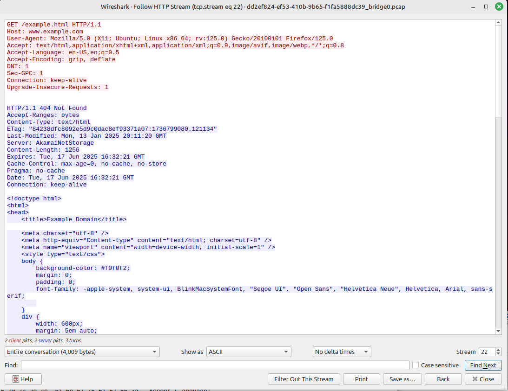

Project: What does my ISP see? Analyzing Packets. Scenario 1: HTTP
Scenario 1: HTTP port 80 browsing. Breakdown:
Overview
This scenario is to set a baseline for what data is visible in transit.
HTTP traffic is totally in the clear, no encryption. We should expect to see all data in transit. Unencrypted HTTP traffic is outdated as usernames and passwords are passed in plain text, this should never be used, and hopefully most browsers warn users if they visit a HTTP site.
An ever increasingly secure internet is a good thing, which means finding websites that still use HTTP and not redirect to HTTPS is rare. One such example we will use is http://example.com/example.html This website is over a plain HTTP protocol so we should see everything in plain text that we capture.
Setup
I set up a new virtual machine with Linux Ubuntu installed and Firefox.
I will run a packet capture on the same Ubuntu host that is browsing to see what exits the local host.
Wireshark is running on the hypervisor host and will capture traffic that passes through it.
I am running a packet capture on the firewall between my router and the ISP ONT to see what exits my home network. I will also examine the Zenarmor NexGen Firewall Plugin live logs to watch for DNS resolution requests and connections.
I expect to see the same data visible from all places in the network since this is in plain text.
Activity on the local host:
The website used will be example.com (yes this is a real website). I set all devices to capture traffic, then load this webpage.

I capture all traffic using tcpdump and write it out to a file.
sudo tcpdump -w scenario1httpubuntu.pcap
reading the packet capture file and filtering for port 53 shows all the DNS queries. Listed here is the request to resolve www.example.comReading the packet capture file again and filtering for port 80 shows all the HTTP traffic. The -A option shows the packet contents in ASCII. All the content of the HTML file is visible.
Reading the packet capture file once more and grepping for the keyword “GET” allows me to see all the file requests that were requested.
Everything is visible from this point in the network. DNS Requests, Website URLS, HTML content, etc.
Activity seen on the VM’s Host using a Wireshark capture:
The computer running the virtual machine is a Linux Mint PC, and it is also running Wireshark set to capture the same traffic for comparison.
Wireshark is filtering out port 53 to view DNS queries. Listed here is the DNS request for example.com
Wireshark is filtering port 80 content. Listed here is the specific example.html file we viewed.
Wireshark is now filtering for HTTP content. We can see the content of the specific example.html file that was downloaded.

Wireshark is filtering for the “GET” keyword. This is showing all file requests that were made are visible.
Everything is also visible at this point in the network. DNS requests, website URLs, HTML content, etc, is all exposed in plain text.
On the firewall beyond the router:
Zenarmor connections shows port 80 and port 443. I intentionally only went to the HTTP site so maybe some redirect is happening.

Zenarmor saw DNS requests for example.com on port 53. You can see 74.40.74.40 is my local ISP DNS Server.

Zenarmor sees web traffic specific page requests (example.html) from example.com

It even labels the PC it came from as running Ubuntu and Mozilla.

I loaded the packet capture from this firewall into Wireshark for further analysis.
Wireshark is filtering out port 53 to view DNS queries. Listed here is the DNS request for example.com

Wireshark is filtering port 80 content. Listed here is the specific example.html file we viewed.

Wireshark filtering for HTTP content. We can see the content of the specific example.html file that was downloaded.

Wireshark is filtering for the “GET” keyword. This is showing all file requests that were made are visible.

One cool thing you can do with Wireshark is what they call follow the stream. Right click on a HTTP packet, and choose Follow – > HTTP stream. This shows the entire conversation (both requests and responses.)
Everything is also visible at this point in the network. DNS requests, website URLS, HTML content, etc, is all exposed in plain text.
This is the last hop where I can capture packets. This is the same data that is being seen outside my home network. HTTP traffic is completely transparent.
Conclusion:
Everything is visible to anyone on the network, anyone able to intercept traffic, and my ISP when traffic is sent using the HTTP protocol.
HTTP traffic shows the entire HTTP request/response, including:
- Domains
- Full URLs
- Headers (protocols, source and destination IP addresses, and ports)
- Content (like HTML, images, scripts)
- Usernames and passwords
This allows analysis of cookies, query strings, and other metadata that would be encrypted in HTTPS.
Its super important to be aware that all traffic is exposed when using insecure HTTP sites.
Using HTTP is the equivalent of sending a postcard through the mail. Anyone who picks it up along the way can see everything!
That’s it!